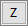

作図に使ったデータポイントについての記述的な情報を表示するには、データ情報ウィンドウとデータポイントツールチップを利用します。
下の画像では、様々な年代・メーカーの自動車のデータセットを表しています。まずPowerとGas Mileageを利用してグラフを作成し、このグラフを使って機能を説明します。ツールバーのデータリーダ  を選択し、グラフ上の外れ値になるようなデータポイントをクリックします。データ情報ウィンドウが開き、クリックしたポイントがワークシートの334行に、または座標：X = 66 (Power)とY = 36 (Gas Mileage)にあることがわかります。
を選択し、グラフ上の外れ値になるようなデータポイントをクリックします。データ情報ウィンドウが開き、クリックしたポイントがワークシートの334行に、または座標：X = 66 (Power)とY = 36 (Gas Mileage)にあることがわかります。

実際に、ワークシートの334行目には Saturnモデルがあり、 Yearが2004であり、Powerは66kw 、Gas Mileageは36mpgであることが確かめられます。データ情報ウィンドウはデフォルトではこの形式で情報を報告しますが、解析を行うに当たってXは66で、Yが36であるという情報だけでは不十分ではないでしょうか？単に座標を報告するのではなく、XとYの値とそれぞれのラベルを表示してみましょう。さらに、このデータポイント(2004 Saturn)に対して、0-60mph、Weightそして、Engine Displacementなどを付け加えると、より便利になるでしょう。データ情報ウィンドウでは、このような付加的な情報を追加して、その変更を記録しておくことができます。

Origin 2019を起動してデータポイントにマウスオーバーすると、データ情報ウィンドウと同じようなツールチップが表示されます。ツールチップはデータポイントツールチップダイアログでカスタムできます。データ情報レポート設定ウィンドウを簡単にしたものです。
ツールチップショートカットメニュー
ツールチップの編集やその他のオプションについては、データポイントのツールチップを直接右クリックしてください。
データツールチップの表示をオフにするには、いくつかの方法があります（次のヒントを参照してください）。最も速い方法 - 特に、この機能を有効にして一時的に無効にしたい場合 - グラフをアクティブにして表示メニューをクリックします。データツールチップを選択して、チェックを外します。このメニュー項目を再度選択するか、Originを再度起動しない限り、全てのグラフでツールチップが無効になります。 |
2つのデータツールチップがあり、もう1つは旧式でカスタマイズ不可能なデータプロットツールチップです。この２つの表示を切り替える、またはそれらを完全にオフにすることができます。LabTalkシステム変数の@PTおよび@ PTIの値を変更することによって、データプロットおよびデータポイントツールチップの表示を選択的に制御できます。 @PT=0; //データプロットとデータポイントツールチップの両方を無効にする @PT=1; //2次元グラフ用のデータポイントツールチップを有効にする @PT=2; //3D OpenGLグラフのデータプロットツールチップを有効にする（初期設定） @PT=3; //2Dグラフと3D OpenGLグラフの両方のデータプロットツールチップを有効にする @PTI=0; //データポイントツールチップのみを無効にする @PTI=1; //データポイントのツールチップを有効にする（デフォルト) |
デフォルトでは、データポイントのヒントが中程度の透明度で表示されます。LabTalk System Variable @TDTの値を変更することによって、ツールチップの透明度に影響を与えることができます。LabTalkシステム変数の値を変更する方法については、このFAQを参照してください。 |
データ情報ウィンドウを右クリックし、コンテキストメニューを開きます。
| グラフに行く |
ソースグラフに移動します。グラフウィンドウがアクティブのときは使用できません。 |
|---|---|
| シートに移動 |
ソースワークシートに移動します。ワークシートウィンドウがアクティブのときは使用できません。 |
| セルのテキストのコピー |
データ情報ウィンドウのセルをクリックし、セル内のテキストをクリップボードにコピーします。 |
| すべてコピー |
データ情報ウィンドウに表示されているすべてのテキストをクリップボードにコピーします。 |
| ユーザ設定 | データ情報レポート設定ダイアログを開きます。 データ情報レポート設定の詳細については、以下を参照してください。
Note: ユーザ設定コンテキストメニューは、グラフウィンドウがアクティブな場合にのみ使用できます。 |
データ情報レポート設定ダイアログは、データ情報ウィンドウに表示される内容をカスタマイズするために使用されます。
ダイアログの下部にある表示/非表示ボタンを使用して、外側のパネルを一時的に非表示にして、中央パネルを広くすることができます。 |
通常、選択したポイントのXとYの値（存在する場合はZ）を表示するには、データ情報ウィンドウが必要です。これらのボタンを使用して、データ情報ウィンドウ（またはデータポイントツールチップ）にデータポイント値を追加します。
数値データをプロットすると、グラフ軸の目盛りラベルは、ソースワークシートの対応するデータとは異なる形式になるのが一般的です。そのような場合は、データポイント値を追加するために座標ボタン（たとえば、 ボタン）とソースボタン（たとえば）を使用できます。
ボタン）とソースボタン（たとえば）を使用できます。
Note: いずれの場合でも、データ情報またはツールチップの表示にカスタム形式を適用することができます（つまり、（1）ワークシート、（2）グラフ軸、（3）ツールヒント表示用に異なる形式を設定できます） 次の列設定 をご参照ください 。
| <I> 行番号 : 選択したポイントのワークシート行番号 | |
| <X> X 座標 : 選択した点のX座標です | |
| <Y> Y 座標 : 選択した点のY座標です | |
|  | <Z> Z 座標 : 選択した点のX座標です |
| <XData> ソースXデータ : 選択したポイントのソースXデータセット | |
| <Ydata> ソースYデータ : 選択したポイントのソースYデータセット | |
| <Zdata> ソースZデータ : 選択したポイントのソースZデータセット | |
| <S> 空白 : セパレータを追加します |
ダイアログボックスの左と中央の列コントロールは、特定のデータポイントに関連付けられたデータの表示の追加、整列および書式設定に使用されます。
| ワークシートデータリスト |
このパネルには、プロットの作成に使用したワークシート内のすべてのデータセット（列）がリストされます。このリストには、プロットされていないデータが含まれる場合があります。データセットは、ショートネーム列とロングネーム（存在する場合）によってリストされます。
|
|---|---|
| データボタンの追加 |
これらのボタンを使用して、データセットをデータ情報ウィンドウの内外に移動します。 |
| データ情報の表内容 |
これは現在、データ情報ウィンドウに追加されているすべてのデータセットのリストです。これらは、列ショートネームのみで表示されます。
|
| データ情報の表内容 |
データ情報表の各列（プレビューに表示される）は個別に設定されます。
|
| 表内容の追加と削除 |
クリックすると、表内容（データ情報ウィンドウから）に列を追加または削除できます。必要に応じて列見出しをドラッグして、表の列を並べ替えることができます。 |
表の行を並べ替えるには、ボタンを中央パネルの左側にドラッグします。 |
タイトル の制御で、データ情報ウィンドウのキーとなる情報を追加できます。
データ情報ウィンドウでは下図のように表示されます。
| レポートのタイトル |
このドロップダウンリストを使ってレポートのタイトルを指定します。次のオプションを利用できます。
|
|---|---|
| カスタム文字列 |
これは、レポートタイトルでカスタムが選択されている場合のみ利用できます。自由な文字列を入力するか、変数i（行番号）またはポイント座標X、Y、Zと組み合わせてLabTalk 文字列レジスタを使用して文字列を作成します。 ％N =ブックショートネーム 例の列で使用されているフォーム（例：％（1、@ W））に従う限り、@Optionsリストの要素を使用することもできます。 例: [%N]%B[$(I)] または[%(1,@W)]%(1,@WS)[$(i)]のいずれかで、[ブックショートネーム] シート名 [行番号]として表示されます。 |
| ウィンドウタイトル |
このドロップダウンリストを使ってウィンドウタイトルを指定します。次のオプションを利用できます。
|
| カスタム文字列 |
これは、ウィンドウタイトルでカスタムが選択されている場合のみ利用できます。自由な文字列を入力するか、変数i（行番号）またはポイント座標X、Y、Zと組み合わせてLabTalk 文字列レジスタを使用して文字列を作成します。 ％N =ブックショートネーム 例の列で使用されているフォーム（例：％（1、@ W））に従う限り、@Optionsリストの要素を使用することもできます。 例: [%N]%B[$(I)] または[%(1,@W)]%(1,@WS)[$(i)]のいずれかで、[ブックショートネーム] シート名 [行番号]として表示されます。 |
| 列ヘッダとしてソースを表示 |
データ情報に列ヘッダを追加ヘッダには、各データ情報テーブル列のデータのソースが表示されます。通常は列のショートネーム、ロングネーム、またはその他のワークシート列ラベル行見出しによって示されます。 またはデータ（座標）または相対（距離）。 |
| フォント | フォントを設定します。 |
|---|---|
| 最小のフォントサイズ | 最小のフォントサイズを設定します。デフォルトは10です。データ情報ウィンドウで列のサイズを変更すると、フォントサイズが変更されます。適切な最小サイズを設定すると、テキストが見やすくなります。 |
| 最大のフォントサイズ | 最大のフォントサイズを設定します。デフォルトは16です。データ情報ウィンドウで列のサイズを変更すると、フォントサイズが変更されます。適切な最大サイズを設定すると、テキストが見やすくなります。 |
| フォントの色とスタイル | データ情報ウィンドウのフォントの色とスタイルを設定します。レポートタイトルは個別に設定できます。
|
| タイトル行間隔 | レポートタイトルの行間隔を設定します。 |
|---|---|
| タイトルフォントスケーラ | レポートタイトルテキストの倍率 |
| フォントの色とスタイル | レポートタイトルの色とスタイルを設定します。
|
| 背景 | 背景色を設定します。 |
|---|---|
| 列ヘッダの背景 | 列ヘッダの背景色を設定します。 |
| グリッド線を表示 | グリッド線の有効または無効 |
| グリッド線の色 | グリッド線の色を指定カスタムカラーを作成するには、このページを参照してください。 |
| 表示のため自動的にフィット | データ情報ウィンドウのサイズを変更すると、ウィンドウにコンテンツを自動的に合わせます。 |
列の設定はウィンドウ表示を編集するためのものです。
| タイプ |
現在の列に表示する情報の種類を設定します。次のオプションがあります。
| ||
|---|---|---|---|
| ソース |
タイプ =
| ||
| ソースをX / Y / Zに影響させる |
列のロングネームがある場合には、このボックスをオンにして列のロングネームでソースデータをリスト表示します。 それ以外の場合はショートネームで表示します。このボックスは、ソースデータを表に追加する（でデータ値を追加する）ときに自動的に選択されます。 | ||
| 接頭語 |
列の内容に付ける接頭語を指定します。 | ||
| 接尾語 |
列の内容に付ける接尾語を指定します。 | ||
| フォントスケーラ | 列テキストの倍率 | ||
| フォントの色とスタイル | 列のテキストのフォントの色とスタイルを設定します。
| ||
| 列幅 |
| ||
| 水平と垂直整列 |
|
カスタムのデータ情報設定は、アクティブなグラフウィンドウ、アクティブなグラフレイヤ、またはアクティブなデータプロットで保存することができます。さらに、後で保存したテーマを読み込むことができ、設定を再作成する手間を省くことができます。